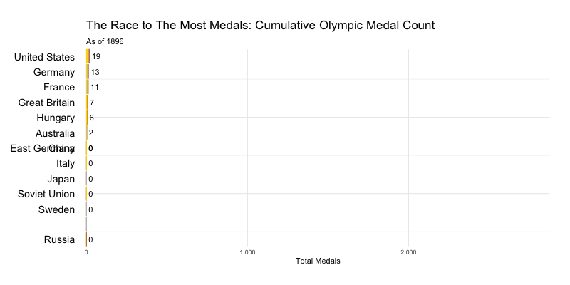

Welcome to my professional portfolio! Here, you will discover a diverse collection of projects that demonstrate my proficiency and expertise in the fields of data science, statistics, and business economics. Each undertaking presents a distinctive opportunity for me to explore the captivating realm of data and its versatile applications across various domains. Through rigorous analysis, insightful visualization, and advanced modeling techniques, my goal is to unveil valuable insights and generate meaningful impact.
QUANTFIN: An AI-Powered Backtesting and Portfolio Optimization Application
As part of the STAT 682 Quantitative Financial Analytics course, our group developed an end-to-end application to backtest trading strategies. The application supports training on data from 2014 to the present and benchmarking against traditional strategies like moving-average crossovers and momentum-based approaches. We implemented advanced techniques, including RNNs and Reinforcement Learning, to remain at the forefront of innovation. Additionally, we designed a dedicated feature to optimize portfolio allocation using an efficient frontier model.
Learn more

Golden Insights: An Analytical Perspective of the Olympics
The project provides an overview of Olympic data, identifying countries that have overperformed or underperformed historically. Additionally, a predictive model using XGBoost was developed to forecast performance at the 2024 Paris Games. The project is presented through an immersive website featuring animated and interactive visuals to enhance understanding and engagement with the data.
Learn more
Timing Ozone: An In-Depth ARIMA Analysis
This project investigates daily mean ozone levels in Houston, focusing on data collected from Moody Tower on the University of Houston campus. Analyzing trends and patterns in ozone levels, the study employs time series modeling techniques, such as ARIMA, to forecast ozone levels. Despite some limitations, the findings offer valuable insights into the dynamics of ozone pollution in Houston, emphasizing the importance of continued monitoring and potential interventions to mitigate its effects.
Learn more
Implementing and Applying Iterative Reweighted Least Squares
Our project delved into the versatility of the IRLS algorithm across various scenarios, highlighting its robustness and adaptability. From predicting binary outcomes like customer churn to modeling count data such as accident rates, IRLS proved effective in providing accurate parameter estimates and probabilities, making it a reliable tool for informed decision-making in diverse fields.
Learn more
Modeling Ebay Auctions
In this R-studio project, I analyzed bidder behavior and auction dynamics using visualizations, uncovering how auction length affects factors like opening bids and unique bidders. Through correlation analysis, I identified key predictors influencing selling prices. Ultimately, I used a LASSO Regression model to predict eBay auction prices for Palm Pilot M515 PDAs, navigating predictor interdependence for accurate estimations.
Learn more
Predicting New York State Traffic
Our project centered on predicting traffic volume specifically along New York State roadways in R. Leveraging sophisticated modeling techniques like XGBoost, Linear Regression, and Poisson Regression, we aimed to accurately forecast traffic flow. Through detailed analysis and model comparison, we honed in on the most effective approach to predict traffic patterns in this dynamic transportation network.
Learn more

Heart Disease Prediction
In this heart disease prediction project in Python, I employed K-Nearest Neighbors (KNN), Logistic Regression, and Random Forest models to accurately classify individuals and determine the strongest predictors of heart disease. Through comprehensive analysis of various factors, we aim to enhance understanding and aid in proactive healthcare interventions.
Learn more
Bridge Displacement Project
In this project, I utilized Python to model three distinct bridges and analyze their load-bearing capacities. By simulating different load scenarios, we aimed to gain insights into the structural integrity and performance of these bridges under varying conditions.
Learn more
Cryptography
Coded an algorithm in Python with the ability to decrypt any words or letters with 99% certainty. Used letter frequency probability to make repeated guesses in pursuit of decoding any foreign text.
Learn more
SIR Modelling of Diseases
Implemented an SIR model in Matlab to predict how a disease, such as COVID-19, might propagate. Simulated the proliferation of disease given a set of input variables, such as initial infected population, rates of infection, and loss of immunity
Learn more

Letter Prediction with Neural Networks
In this project, I have developed a neural network model capable of predicting deformed letters "r," "i," "c," and "e" with high accuracy. By training the model on a dataset of distorted letter images, we aim to provide a reliable tool for letter recognition even under challenging deformations.
Learn more